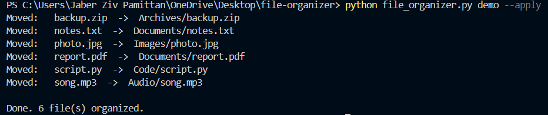

File Organizer
Downloads folders pile up fast, and sorting them by hand is tedious. This command-line tool solves that by scanning a folder and sorting every file into subfolders by type. It shows a preview before moving anything, and it renames duplicates instead of overwriting files.
